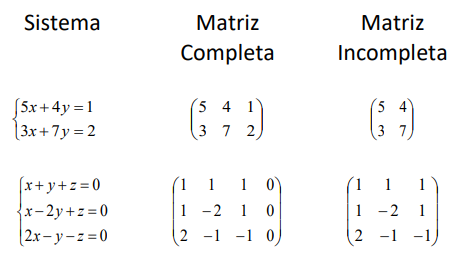
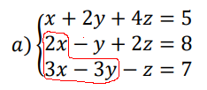

Sistemas Lineares 3x3
Algo novo que aprendemos nesse trimestre foi a resolução de sistemas lineares 3x3 (3 incógnitas).
Para começar, vamos ver os tipos de sistema:
SPD = Sistema possível determinado (uma solução)
SPI = Sistema possível indeterminado (várias soluções)
SI = Sistema impossível (nenhuma solução)
Sabendo disso, vamos ver como resolver um sistema linear 3x3.
É possível representar um sistema na forma de matrizes:
 Fonte: Arquivo da professoraAlgo interessante é que, caso o determinante da matriz incompleta for diferente de 0, é um SPD, caso contrário, SPI ou SI.
Escalonamento
Usamos a matriz completa para resolver pelo método de escalonamento.
Para começar, iremos resolver este sistema linear 3x3, nosso objetivo é zerar os valores circulados:
 Fonte: Imagem editada do Arquivo da professoraE para zerar esses valores, fazemos operações com as próprias linhas.
Primeiro, transformar o sistema em matriz:
| 1 | 2 | 4 | 5 |
| 2 | -1 | 2 | 8 |
| 3 | -3 | -1 | 7 |
Primeira operação que podemos fazer é a linha 1 * 2 - linha 2, aí substituimos a linha 2 com o resultado.
+2 +4 +8 +10
-2 +1 -2 -8
0 +5 +6 +2
| 1 | 2 | 4 | 5 |
| 0 | 5 | 6 | 2 |
| 3 | -3 | -1 | 7 |
Agora, vamos fazer a linha 1 * 3 - linha 3.
+3 +6 +12 +15
-3 +3 +1 -7
0 +9 +13 +8
| 1 | 2 | 4 | 5 |
| 0 | 5 | 6 | 2 |
| 0 | 9 | 13 | 8 |
Por fim, não podemos usar a linha 1 pois vai adicionar 1 no x da linha 3, então usaremos a linha 2. Nesse caso, faremos linha 2 * 9 - linha 3 * 5:
+0 +45 +54 +18
-0 -45 -65 -40
+0 +0 -11 -22
Tudo feito! Temos que 11z = 22, então z = 2. Para achar o valor das outras incógnitas, basta substituir o valor do z nas outras equações, por exemplo, 5y + 6z = 2 = 5y + 12 = 2 = 5y = -10 = y = -2
E por fim, o valor de x: x + 2y + 4z = 5 = x -4 + 8 = 5 = x = 1
S = (1, -2, 2)
Há também o caso de, na última linha após todas as operações, aparecer uma inconsistência matemática, por exemplo, 0z = 4. Quando acontecer isso, é um sistema impossível, não há solução.
E também, quando a última linha estiver toda zerada após as operações, é um sistema possível indeterminado, há várias soluções, e para resolver este, fazemos o seguinte:
Podemos colocar uma outra letra para um valor, por exemplo, z = t, e baseado nas outras equações achamos os valores das outras letras baseado na letra que decidimos que seria a base, por exemplo, y + 3z = 2 = y + 3t = 2 = y = -3t + 2
E no x, por exemplo: x + y + z = 5 = x -3t + 2 + t = 5 = x = 2t + 3
Então, a solução desse sistema seria S = (2t + 3, -3t + 2, t). Basta substituir t com algum valor numérico e substituir nas outras letras.